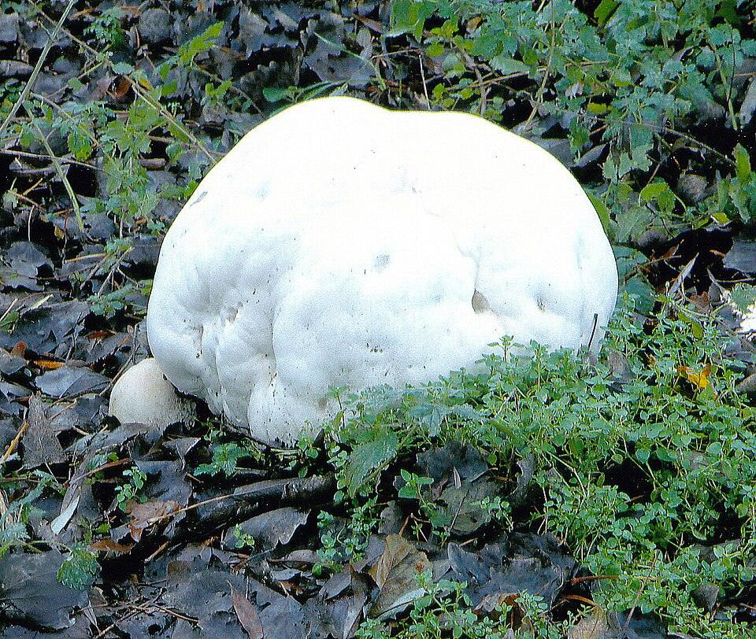
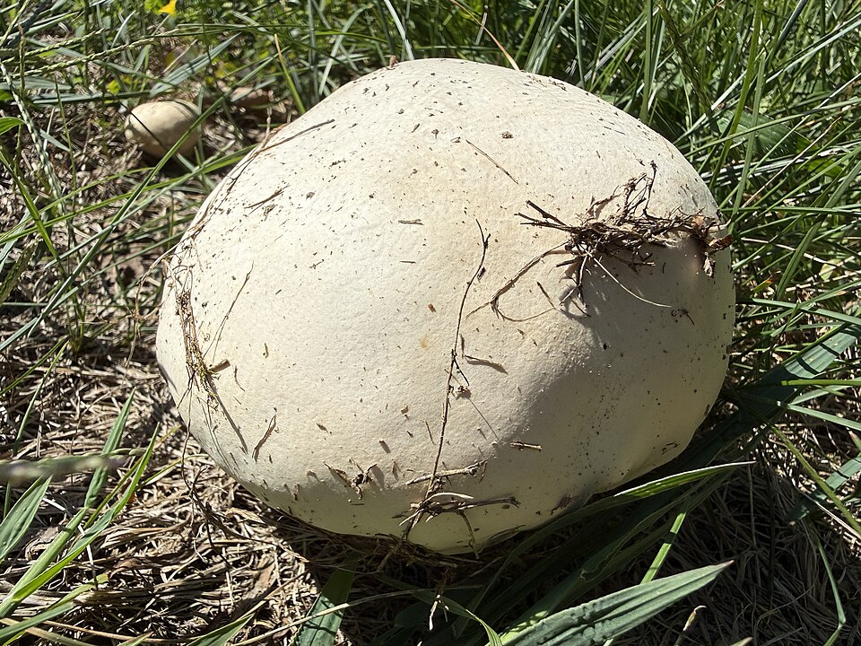

Giant Puffball
Calvatia gigantea


- Also called
- Calvatia gigantea
- Kind
- mushroom · Agaricaceae
- Legal status
- Ask Vermont Fish & Wildlife or the county forester before collecting on public land. (checked 2026-11-09)
- Look-alikes
- Calvatia booniana (western); young Amanita
Names
Giant puffball, Calvatia gigantea. Family Agaricaceae.
A white ball the size of a soccer ball or larger, found in woods and at meadow edges in late summer and early fall.
Range and habitat
Saprobic on the ground, in woods or meadow edges, drainage ditches and under brush; fairly widespread from the Great Plains eastward (MushroomExpert.com, Kuo, November 2017).
How to identify
- Ball-shaped, 20 to 30 cm across or more, often soccer-ball sized, sometimes much larger; never pear-shaped (no sterile base).
- White when fresh, then yellowish or olive brown; finely velvety when young.
- Inside, white, then olive yellow, then brown spore dust; often a short thick cord at the attachment point.
Look-alikes
- Calvatia booniana: western, with polygonal scales, up to 60 cm.
- Puffball hunters are warned that a young Amanita can look like a small puffball: cut it in half; a mushroom shape inside means it is not a puffball (MushroomExpert.com's puffball page; Wikipedia's mushroom poisoning page).
Through the year
Late summer and early fall (MushroomExpert.com).
What the sources say about eating and poison
MushroomExpert.com gives no edibility information. Slice any suspected puffball top to bottom: a young Amanita (some are deadly) contains the outline of a future mushroom.
Never eat a wild mushroom because of anything on this page. See Mushrooms in Vermont Woods and call a poison center (1-800-222-1222) if someone has eaten one.
What helps it thrive
It lives on rich soil and rotting plant matter in woods and meadow edges.
Sources
- MushroomExpert.com, Calvatia gigantea (Kuo, November 2017): https://www.mushroomexpert.com/calvatia_gigantea.html
- MushroomExpert.com, Puffballs (Kuo, November 2008): https://www.mushroomexpert.com/puffballs.html
- Wikipedia, Agaricaceae (the family now includes the puffballs): https://en.wikipedia.org/wiki/Agaricaceae
Vermont Woodland Owner's Reference, built 2026-11-11. Rules and dates here are summaries, not legal advice; dates shift with elevation and year. Photo and recording credits · The text is by Loop Works, CC BY 4.0 (pictures and recordings keep their own licenses)